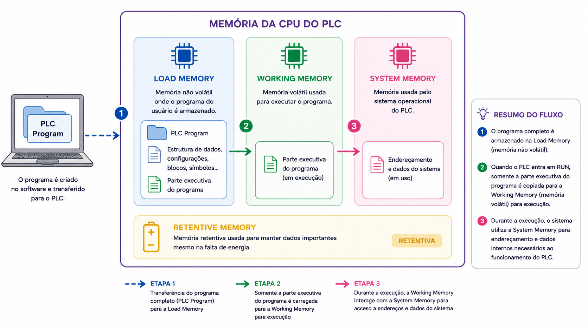

Texto Explicativo da Aula
Introdução à Memória do Sistema
Continuando o estudo das áreas de memória da CPU S7, chegamos à Memória do Sistema (System Memory). Diferentemente da Memória de Carga e da Memória de Trabalho, que lidam diretamente com o armazenamento e a execução do programa de controle, a Memória do Sistema desempenha um papel estrutural fundamental: ela é a área onde são reservados os espaços de endereçamento utilizados pela CPU para identificar e gerenciar cada elemento do processo controlado.
Para compreender plenamente a função da Memória do Sistema, é necessário primeiro entender o conceito de endereçamento, que é a base sobre a qual toda a programação do CLP é construída.

O que é Endereçamento?
Quando um CLP é utilizado para controlar um processo industrial, ele precisa interagir com uma grande variedade de dispositivos de campo: sensores, botoeiras, fim de curso, transmissores, contatores, válvulas, inversores de frequência, entre outros. Para que a CPU possa reconhecer, monitorar e controlar cada um desses elementos de forma inequívoca, é necessário que cada dispositivo seja identificado por um endereço único.
O endereçamento é justamente o processo de atribuir um identificador exclusivo a cada elemento do processo que será monitorado ou controlado pelo CLP. Esse endereço é utilizado no programa de controle para referenciar o dispositivo correspondente, informando à CPU exatamente de qual entrada está lendo um sinal ou para qual saída deve enviar um comando.
Uma analogia útil é pensar nos endereços como o número de uma casa em uma rua: assim como o carteiro precisa do endereço correto para entregar uma carta à casa certa, a CPU precisa do endereço correto para acessar o sinal do dispositivo certo. Se dois dispositivos tivessem o mesmo endereço, a CPU não saberia qual deles está sendo referenciado, assim como uma carta sem endereço preciso não chegaria ao destino correto.
Estrutura de um Endereço no CLP S7
No CLP S7, os endereços seguem uma notação padronizada que identifica o tipo de sinal (entrada ou saída), a localização física no rack (número do módulo e canal). Um exemplo de endereço amplamente utilizado é o formato:
I 0.0, onde:
- I (Input) indica que se trata de uma entrada digital.
- 0 representa o byte de endereço (relacionado ao slot do módulo no rack).
- 0 representa o bit específico dentro desse byte (canal do módulo).
Da mesma forma, saídas digitais utilizam o prefixo Q (Output), entradas analógicas utilizam IW (Input Word) e saídas analógicas utilizam QW (Output Word), entre outras notações.
Por exemplo, em um sistema onde uma botoeira de partida está conectada ao primeiro canal do módulo de entrada digital, ela pode receber o endereço I 0.0. Ao programar a lógica de controle, sempre que o engenheiro quiser verificar se essa botoeira foi pressionada, utilizará o endereço I 0.0 no código do programa. A CPU, ao encontrar esse endereço durante a execução do ciclo de varredura, saberá exatamente qual sinal de campo deve ser lido.
O Papel da Memória do Sistema no Endereçamento
Para que o endereçamento funcione corretamente, a CPU precisa de um espaço de memória dedicado onde os valores atuais de cada endereço possam ser armazenados e atualizados a cada ciclo de varredura. Esse espaço é a Memória do Sistema.
Em termos práticos, a Memória do Sistema pode ser compreendida como uma tabela de imagens que a CPU mantém atualizada continuamente:
- Tabela de imagem das entradas (Process Image Input - PII): a cada ciclo de varredura, a CPU lê o estado de todos os módulos de entrada e copia os valores para esta tabela na Memória do Sistema. Durante a execução do programa, a CPU consulta essa tabela, e não diretamente os módulos físicos, para verificar o estado das entradas, garantindo consistência dos dados ao longo de todo o ciclo.
- Tabela de imagem das saídas (Process Image Output - PIQ): durante a execução do programa, os comandos de ativação ou desativação de saídas são gravados nesta tabela. Ao final do ciclo de varredura, a CPU transfere os valores dessa tabela para os módulos de saída físicos, atualizando o estado dos atuadores de campo.
Além das tabelas de imagem de processo, a Memória do Sistema também reserva espaço para outros elementos internos utilizados no programa, como merkers (marcadores ou flags, bits internos utilizados como variáveis auxiliares na lógica do programa), temporizadores e contadores.
Por que o Endereçamento é Essencial na Programação do CLP?
O endereçamento é a linguagem por meio da qual o programa de controle se comunica com o mundo físico do processo industrial. Sem endereços corretamente definidos e atribuídos, a CPU seria incapaz de distinguir um sensor de outro, uma saída de outra, tornando impossível a implementação de qualquer lógica de controle funcional.
Durante a fase de projeto e programação do CLP, uma das primeiras tarefas do engenheiro é elaborar uma lista de endereços (também chamada de tabela de variáveis ou tabela de símbolos), que relaciona cada dispositivo de campo ao seu respectivo endereço no CLP. Essa lista serve como referência durante toda a programação e manutenção do sistema.
O estudo aprofundado das convenções de endereçamento, da estrutura dos bytes e bits de endereço, e da configuração dos módulos de I/O será desenvolvido em capítulos posteriores. Por ora, o fundamental é compreender que a Memória do Sistema é o espaço físico dentro da CPU que viabiliza esse sistema de endereçamento, reservando áreas específicas para cada tipo de dado endereçável do processo.
Visão Geral das Quatro Áreas de Memória da CPU S7
Com a introdução da Memória do Sistema, é possível consolidar a visão geral das quatro áreas de memória estudadas:
Exemplo Prático Aplicado
Cenário: Definição de Endereços para uma Estação de Embalagem Automática
Uma indústria de alimentos está implantando uma estação de embalagem automática controlada por um CLP S7-300. O sistema possui os seguintes dispositivos de campo:
Entradas (sensores e botoeiras):
- Botoeira de partida (START)
- Botoeira de parada (STOP)
- Sensor óptico de presença de embalagem
- Sensor fim de curso da seladora
Saídas (atuadores):
- Contator da esteira transportadora
- Solenóide da seladora
- Luz indicadora de sistema em operação
- Alarme sonoro de falha
Passo 1 - Levantamento dos dispositivos e seus módulos
O engenheiro verifica a configuração do rack: o módulo de entrada digital ocupa o slot 4 (endereços I 0.0 a I 0.7) e o módulo de saída digital ocupa o slot 5 (endereços Q 4.0 a Q 4.7).
Passo 2 - Elaboração da tabela de endereços
Passo 3 - Utilização dos endereços na programação
Com a tabela definida, o engenheiro inicia a programação em linguagem Ladder no STEP 7. Para implementar a lógica de partida da esteira (pressionar START sem que STOP esteja pressionado), utiliza os endereços diretamente no programa:
- Contato normalmente aberto de I 0.0 (START) em série com
- Contato normalmente fechado de I 0.1 (STOP),
- Aciona a bobina de Q 4.0 (contator da esteira) e Q 4.2 (luz indicadora).
Passo 4 - Funcionamento da Memória do Sistema durante a execução
Ao entrar em modo RUN, a cada ciclo de varredura a CPU:
- Lê o estado físico de I 0.0 e I 0.1 e atualiza a tabela de imagem de entradas na Memória do Sistema.
- Processa a lógica do programa consultando os valores na tabela de imagem.
- Grava o resultado (Q 4.0 ligado ou desligado) na tabela de imagem de saídas.
- Transfere o valor de Q 4.0 para o módulo de saída físico, que por sua vez energiza ou desenergiza o contator da esteira.
Passo 5 - Benefício prático do endereçamento correto
Durante a manutenção, um técnico identifica que a botoeira START está com falha. Consultando a tabela de endereços, localiza imediatamente que o dispositivo conectado a I 0.0 é a botoeira START, identifica fisicamente o terminal correto no módulo de entrada e realiza a substituição com precisão e agilidade.
Questões de Múltipla Escolha
-
Qual é a principal função da Memória do Sistema (System Memory) na CPU do CLP S7?
A) Armazenar permanentemente o programa de controle transferido do computador
B) Reservar espaços de endereçamento utilizados pela CPU para identificar e gerenciar os elementos do processo
C) Executar a parte executável do programa durante o ciclo de varredura
D) Manter os dados de comunicação de rede entre a CPU e os módulos de I/O
-
O que é endereçamento no contexto da programação de CLPs?
A) O processo de configurar o endereço IP da CPU para comunicação via Profinet
B) A definição do endereço físico do rack no barramento do sistema de automação
C) A atribuição de um identificador único a cada dispositivo de campo, permitindo que a CPU o reconheça e referencie no programa
D) A configuração do mapa de memória interno que define o tamanho da Memória de Trabalho
-
No endereço I 0.0 utilizado no CLP S7, o que cada elemento da notação representa?
A) I = saída digital; 0 = número do rack; 0 = número do slot
B) I = entrada digital; 0 = byte de endereço; 0 = bit específico dentro do byte
C) I = memória interna; 0 = tipo de sinal analógico; 0 = canal do módulo
D) I = identificador de rede; 0 = endereço do módulo de comunicação; 0 = porta utilizada
-
Por que cada dispositivo de campo conectado ao CLP deve ter um endereço único?
A) Para que o módulo de alimentação possa distribuir energia individualmente a cada dispositivo
B) Para evitar conflitos no barramento de comunicação Profibus entre os módulos do rack
C) Para que a CPU possa identificar e diferenciar cada dispositivo sem ambiguidade durante a execução do programa
D) Para que o software de programação possa gerar automaticamente o diagrama elétrico do sistema
-
A tabela de imagem das entradas (Process Image Input), armazenada na Memória do Sistema, é atualizada:
A) Apenas quando o operador solicita uma leitura manual pelo software de programação
B) Uma única vez durante a inicialização da CPU, permanecendo inalterada durante a operação
C) A cada ciclo de varredura, no início do ciclo, com os valores lidos dos módulos de entrada físicos
D) Apenas quando ocorre uma mudança de estado nas entradas, por meio de interrupção de hardware
-
Qual é a vantagem de a CPU consultar a tabela de imagem de processo (Memória do Sistema) em vez de acessar diretamente os módulos físicos durante a execução do programa?
A) Reduz o consumo de energia dos módulos de I/O ao evitar leituras físicas frequentes
B) Garante que os valores de entrada e saída permaneçam consistentes ao longo de todo o ciclo de varredura
C) Permite que a CPU execute dois ciclos de varredura simultaneamente para aumentar a velocidade
D) Elimina a necessidade de fiação entre os módulos de I/O e os dispositivos de campo
-
Além das tabelas de imagem de processo, quais outros elementos são armazenados na Memória do Sistema?
A) O programa de controle completo e os comentários de documentação do projeto
B) Os parâmetros de configuração da fonte de alimentação e dos módulos de comunicação
C) Merkers (marcadores internos), temporizadores e contadores utilizados no programa
D) O histórico de falhas e alarmes gerados durante a operação do processo
-
Um engenheiro está programando um CLP S7 e precisa monitorar o estado de uma válvula de controle on/off conectada ao canal 3 do módulo de entrada digital. Se o byte de endereço desse módulo é 1, qual será o endereço correto para essa válvula?
A) Q 1.3
B) I 3.1
C) I 1.3
D) Q 3.1
-
Durante a fase de projeto de um sistema de automação com CLP, qual documento é elaborado para relacionar cada dispositivo de campo ao seu respectivo endereço no CLP?
A) Diagrama de blocos funcionais (Function Block Diagram - FBD)
B) Lista de endereços ou tabela de variáveis/símbolos
C) Diagrama de sequência de operação (Sequence Function Chart - SFC)
D) Manual de configuração do hardware do rack (Hardware Configuration)
-
Um técnico de manutenção relata que, após uma falta de energia, os valores dos merkers (marcadores internos) utilizados no programa foram zerados. Com base no conhecimento sobre as áreas de memória do CLP S7, qual é a explicação correta para esse comportamento?
A) Os merkers são armazenados na Memória de Carga (MMC), que foi corrompida durante a falta de energia
B) Os merkers são armazenados na Memória do Sistema (RAM volátil) e são perdidos quando a alimentação é interrompida, a menos que sejam configurados como remanentes
C) Os merkers são armazenados na Memória de Trabalho e foram apagados pelo processo automático de reinicialização do programa
D) Os merkers foram zerados porque a CPU realizou um reset de memória (MRES) automaticamente ao detectar a falta de energia
Gabarito
1 - B | 2 - C | 3 - B | 4 - C | 5 - C | 6 - B | 7 - C | 8 - C | 9 - B | 10 - B